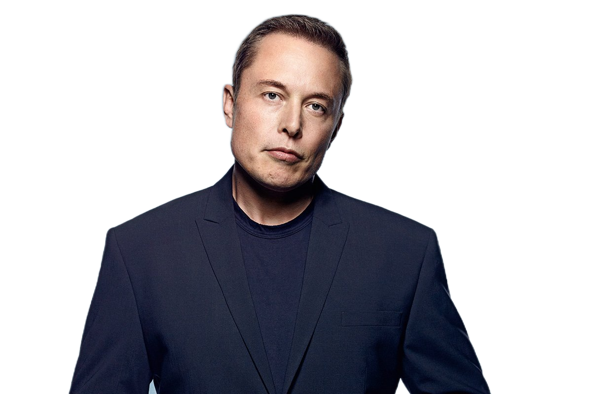

Главная Биография Проекты Контакты
Главная Биография Проекты Контакты
БИОГРАФИЯ

Детство,
учеба в школе и вузах Кто такой Илон Маск? Илон Рив Маск — известный во
всем мире американский изобретатель, инженер, бизнесмен, миллиардер.
Родился 28 июня 1971 года в городе Претория, ЮАР. Отец Эррол Маск
работал инженером-строителем. Мать Мэй — фотомодель и диетолог. Отец
Мэй любил путешествовать. На собственном одномоторном самолете он с
семьей в 1950 году перебрался из Канады в ЮАР, где мать Илона и
познакомилась с Эрролом Маском. У пары родилось трое детей: старший
Илон, брат Кимбал и сестра Тоска. Илон рос необщительным, но
любознательным ребенком, много читал. В три года мальчик интересовался,
где начинается и где заканчивается мир. Будущий изобретатель читал
фантастику Жюля Верна, Айзека Азимова, Роберта Хайнлайна, Джона
Толкина. Особое влияние на становление его как личности оказала книга
«Автостопом по галактике» Дугласа Адамса. Интерес к космосу начался с
произведений «Академия» и «Луна — суровая хозяйка». В Pretoria Boys
High School Илон имел отличные оценки по информатике и физике.
Благодаря фотографической памяти и прочтению двух комплектов
энциклопедий прослыл всезнайкой. Сверстники невзлюбили его за это,
часто издевались и однажды в драке сломали Илону нос. Когда Маску было
8 лет, его родители развелись. Дети уехали жить с мамой в Дурбан, но
потом сыновья вернулись к отцу. Они часто помогали ему в строительстве
и многому научились. После школы юноша поступил в университет в
Претории, но вскоре из-за политических шатаний в стране уехал в Канаду.
Там он учился в университете Куинс (Кингстон), но потом перевелся в
Пенсильванский университет в США, чтобы изучать бизнес и физику.
Получив степень бакалавра в области физики и экономики, Маск поступил в
Стэндфордский университет, где мог стать доктором наук. Но в это время
они с братом разработали свой первый стартап, и Илон ради развития
своего дела бросил Стэнфорд. В 2010 году Маск женился на британской
актрисе Талуле Райли, но через два года они развелись. В 2013 году они
вновь поженились, а в 2016 году разошлись окончательно. Немалые деньги
на счету позволили Маску начать путь к своей глобальной мечте —
освоению космоса. В 2002 году он основал компанию SpaceX, вложив в нее
$100 млн. Компания стала разработчиком серии ракет-носителей и
оператором космических систем. Главный инженер — Илон Маск. Освоение
космоса на уровне жизни на других планетах — цель жизни Маска, пишет
журналист Эшли Вэнс в книге «Илон Маск: Tesla, SpaceX и дорога в
будущее». С помощью своих изобретений Илон Маск продолжает
изменять мир. Состояние он заработал не на оружии и нефти, а
исключительно благодаря своим интеллектуальным способностям, в
результате воплощения которых люди получают больший комфорт и
безопасность в жизни.